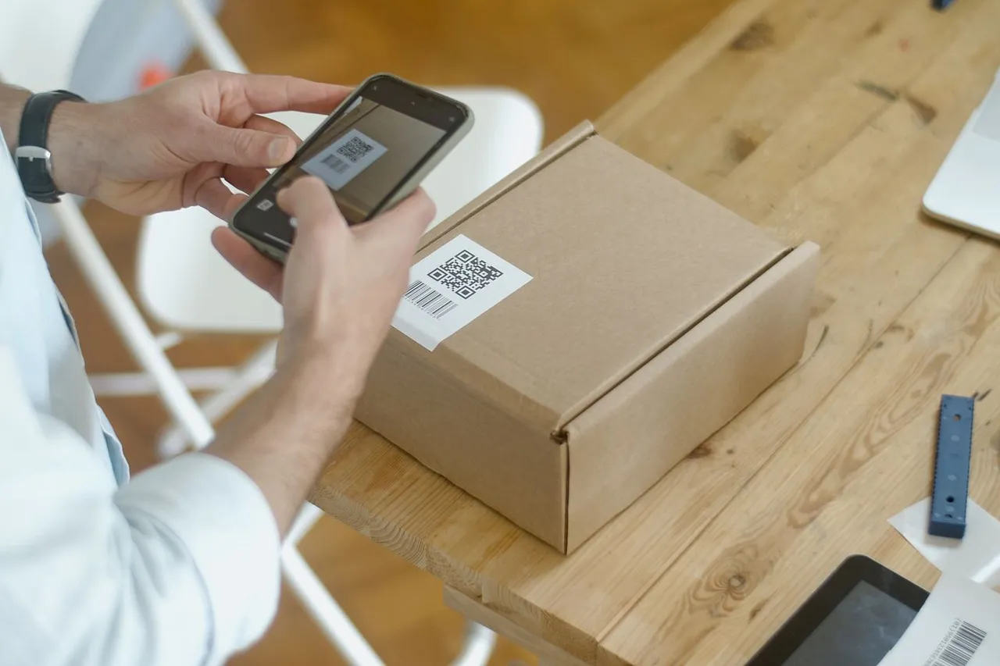

Productos en tu espacio
Un mueble, un equipo o una pieza a escala real en el lugar del cliente antes de comprar.
Experiencias WebAR: la persona escanea un código o abre un enlace y ve el contenido sobre su entorno, desde la cámara del móvil.
Un mueble, un equipo o una pieza a escala real en el lugar del cliente antes de comprar.
Cada platillo o producto visto en la mesa del cliente antes de pedirlo.
Terrenos, maquetas y piezas en AR con información y panoramas 360°.

Una imagen impresa que activa contenido cuando la enfocas con la cámara.

La experiencia se integra con tu sitio, tu catálogo o tu tour virtual.
Dos demos publicadas, que se prueban desde un móvil con cámara, y un concepto ilustrado con una foto de referencia.
No empezamos por la tecnología: empezamos por cómo trabaja tu negocio hoy. Después decidimos qué conviene automatizar y con qué.
Vemos cómo entra un cliente, qué se repite cada día y dónde se pierde tiempo o se escapan oportunidades.
Diseñamos la solución alrededor de tu operación y la conectamos con las herramientas que ya usas.
Medimos el cambio en tu operación, no en la tecnología. Si algo no aporta, no se construye.
Cuéntanos el lugar, el producto o el recorrido. Te decimos qué se puede lograr desde el navegador y qué necesitaría más desarrollo.
Te respondemos con preguntas sobre tu operación, no con un catálogo.